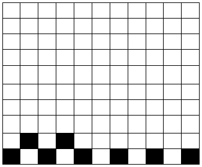
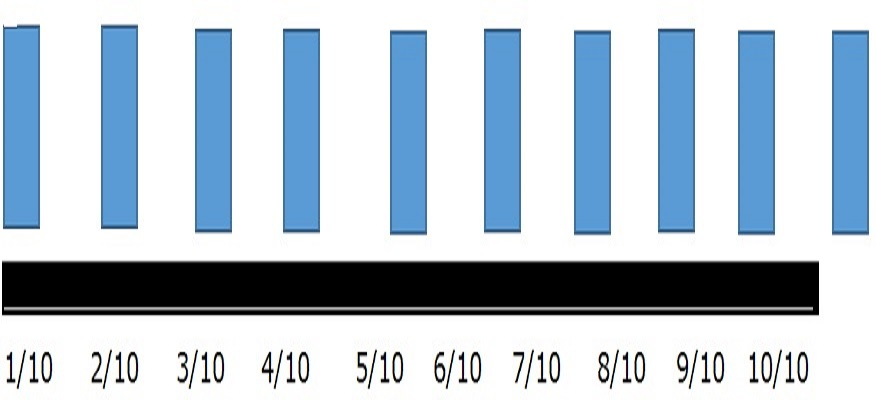

EXPLORE
Look at the blocks or cubes model below to visualize 0.7.
Observe that there are 10 cubes representing the whole.
Cross out 7 cubes from the whole unit.
There are 7 cubes crossed out of 10. This can be written as 7/10 in fraction form or 0.7 in decimal form.
Look at the grid at the top. You observe that 100 squares. This means the whole is equally dividedinto 100 squares. There are 7 squares shaded out of 100 squares.7/100 can be written as 0.07 in decimal form.
Look at the illustration bellow. Notice the number of posts in the number of posts in the number line. These are 10 posts. 5 posts out of 10 are painted.5/10 of the posts are painted. 5/10 is written as 0.5 in decimal.
Think of a Php1 coin. This equal to 100 centavos. 400 centavos can be written as 4/100 in fraction form or 0.40 in decimal form.
Get Moving
Draw a grid or blocks to illustrate the following decimal numbers.
1) 0.4
2) 0.6
3) 0.25
4) 0.50
5) 0.075
Apply Your Skill
Read and write the answer in your notebook.
1. Shanot bought 0.75 kilogram of sugar. Draw a grid or blocks to show the given decimal number.
2. Cyrus paid Php 30 for a hand towel. Draw the paper bills and coins to show the given amount.
3. Cyryl hikes a distance of 0.75 kilometer in going to school every day. Draw a number line to show the distance.
4. Dejay painted 0.6 of the posts in the garden. If there were 10 posts, how many were painted? Draw the posts in a line to show your answer.
5. Timothy harvested some vegetable in the in the garden. The squash weighed 0.95 kilogram. Draw a weighing scale to show the given decimal number.